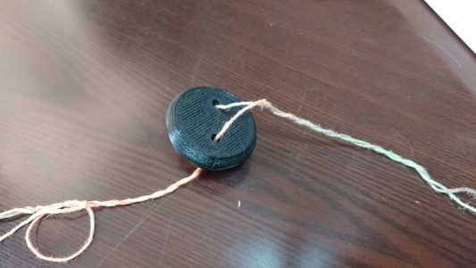

3年 11月
-目次-
-10/29-11/4-
先生と相談して少しテーマの方向性を変えた
親にインタビュー
－どんなおもちゃで遊んでいたかー
・紙で作ったおもちゃ
・磁石でくっつくおもちゃ
・形をはめるおもちゃ
・レゴ
・電話など多様な仕組みがついているもの
・コップの積み木
・絵や粘土
・絵をそろえるおもちゃ
・ぬいぐるみ
実家近くのトイザらスで似たような商品の写真を撮ってきた
-好きな遊びー
外で遊んだり、教育番組などを見るほうがおもちゃより好きだった
3.4才になってくると、木登りや、泥団子づくり、ブランコ、お絵かき、おままごとなどといった集団遊びが多かった
-木製のおもちゃについてー
幼稚園児ぐらいの年齢にならないとおもちゃを投げたりするので怖かった
-祖母の考えー
おもちゃの役割は子供がちゃんと目が見えるか、耳が聞こえるか、体はちゃんと動かせるかなどの健康チェックの役割を持っていた
―おまけー
母の同僚のお孫さんは2歳児ではっきりしゃべれるのはご飯と家族を呼ぶ言葉とyoutubeらしく、youtubeではおもちゃで遊んでいる動画を見ているらしい
インタビューをしてみて
おもちゃについては覚えていないことが多かったので改めて聞いてみると、様々なおもちゃで遊んでいたことが分かった
祖母が言っていたおもちゃには健康チェックの役割があるというのを聞いて、
知育という言葉はマーケティングを行うにあたってちょうどいい言葉だったのではないかと考えた
次回は実際におもちゃを作ってみる
-11/5-11/11-
自分が昔遊んで面白かったおもちゃなどを参考におもちゃ作りをしていく
1.ビュンビュンゴマ

紙を使った手作りのおもちゃとして遊んでいたが、立体的なものでもできないかと思い作ってみたが、
まわしてみると紐が平等にねじれなく、うまく回らなかった
改良が必要
2.ぐるぐる回すだけのおもちゃ
現在出力中で結果待ち